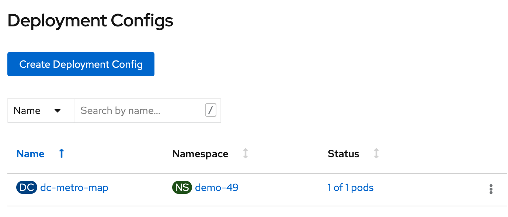
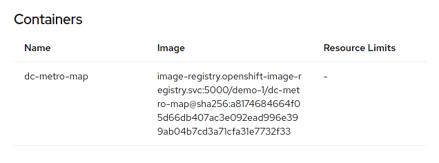
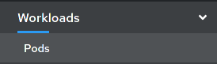
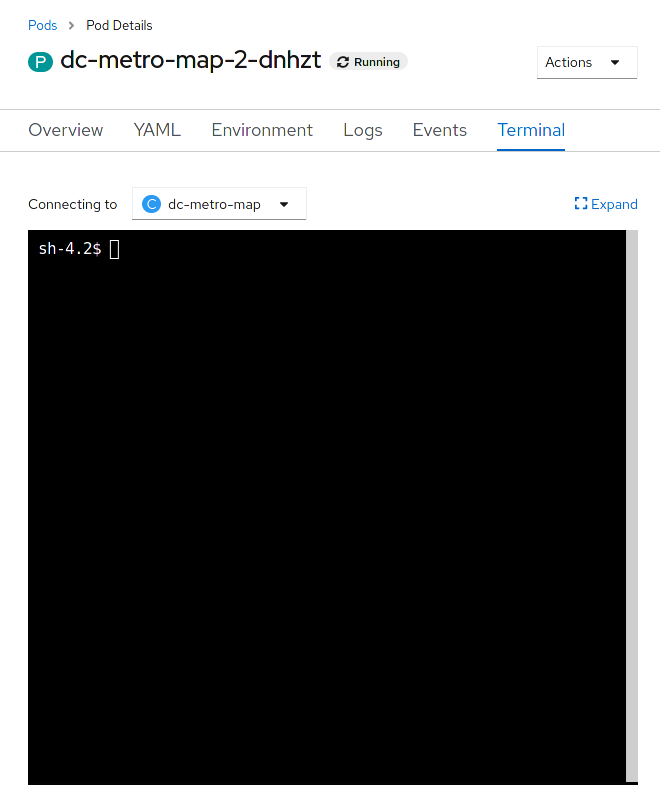

Developing and managing an application in OpenShift
In this lab we will explore some of the common activities undertaken by developers working in OpenShift. You will become familiar with how to use environment variables, secrets, build configurations, and more. Let’s look at some of the basic things a developer might care about for a deployed app.
Setup
From the previous lab you should have the DC Metro Maps web app running in OpenShift.
Only if you don’t already have it running, add it with the following steps.
Goto the terminal and type these commands:
$ oc new-app --name=dc-metro-map https://github.com/RedHatGov/openshift-workshops.git --context-dir=dc-metro-map
$ oc expose service dc-metro-map
See the app in action and inspect some details
Unlike in previous versions of OpenShift, there is no more ambiguity or confusion about where the app came from. OpenShift provides traceability for your running deployment, back to the container image, and the registry that it came from. Additionally, images built by OpenShift are traceable back to the exact branch and commit. Let’s take a look at that!
Goto the terminal and type the following:
$ oc status
This is going to show the status of your current project. In this case it will show the dc-metro-map service (svc) with a nested deployment config(also called a “DC”) along with some more info that you can ignore for now.
A deployment in OpenShift is a replication controller based on a user defined template called a deployment configuration
The dc provides us details we care about to see where our application image comes from, so let’s check it out in more detail.
Type the following to find out more about our dc:
$ oc describe deploymentconfig/dc-metro-map
Notice under the template section it lists the containers it wants to deploy along with the path to the container image.
There are a few other ways you could get to this information. If you are feeling adventurous, you might also want to try to:
- describe the replication controller
oc describe rc -l app=dc-metro-map
- describe the image stream
oc describe is -l app=dc-metro-map
- describe the running pods
oc describe pod
Because we built this app using S2I, we get to see the details about the build - including the container image that was used for building the source code. So let’s find out where the image came from. Here are the steps to get more information about the build configuration (bc) and the builds themselves.
Type the following to find out more about our bc:
$ oc describe bc/dc-metro-map
Notice the information about the configuration of how this app gets built. In particular look at the github URL, the webhooks you can use to automatically trigger a new build, the docker image where the build runs inside of, and the builds that have been completed. New let’s look at one of those builds.
Type the following:```bash $ oc describe build/dc-metro-map-1 ```
This shows us even more about the deployed container’s build and source code, including exact commit information, for this build. We can also see the commit’s author, and the commit message. You can inspect the code by opening a web browser and pointing it to a specific commit, like this:
https://github.com/RedHatGov/redhatgov.github.io/commit/2d5078cc5bbdf3cf63c5ab15e1628f30b3c89954
Change modes to "Administrator", and then click on "Workloads", and "Deployment Configs".
Click on "dc-metro-map", under "Name", and check out the details of the deployment
Within the deployment for the dc-metro-map is a container summary that shows the detailed registry, container reference, and hash information, for the container that was deployed.
Click on "Builds", and then "Image Streams", in the left-side menu.

Click on the "dc-metro-map" image stream, to see its details.
You should see something like what is shown, below.
Click "Builds" and then "Builds", in the left-side menu, to get back to the build summary

Click "dc-metro-map-1" to see the build details
Because we built this app using S2I, we get to see the details about the build - including the container image that was used for building the source code. Note that you can kick-off a rebuild here if something went wrong with the initial build and you'd like to attempt it again.
Notice that, in the "Git Commit" section, you can see the comment from the last commit when the build was started, and you can see the that commit's author.
Pod logs
In the S2I lab we looked at a build log to inspect the process of turning source code into an image. Now let’s inspect the log for a running pod - in particular let’s see the web application’s logs.
Goto the terminal and type the following:
$ oc get pods
This is going to show basic details for all pods in this project (including the builders). Let’s look at the log for the pod running our application. Look for the POD NAME that that is “Running” you will use it below.
Goto the terminal and type the following (replacing the POD ID with your pod's ID):
$ oc logs [POD NAME]
You will see in the output details of your app starting up and any status messages it has reported since it started.
You can see more details about the pod itself with 'oc describe pod/'
Click on "Workloads" and then click on "Pods"
This is going to show basic details for all pods in this project (including the builders).
Next let's look at the log for the pod running our application.
Click the pod that starts with "dc-metro-map-"
Here you see the status details of your pod as well as its configuration. Take a minute here and look at what details are available.
Click the "Logs" button

Now you can see, in the output window, the details of your app starting up, and any status messages that it has reported since it started.
How about we set some environment variables?
Whether it’s a database name or a configuration variable, most applications make use of environment variables. It’s best not to bake these into your containers because they do change and you don’t want to rebuild an image just to change an environment variable. Good news! You don’t have to. OpenShift let’s you specify environment variables in your deployment configuration and they get passed along through the pod to the container. Let’s try doing that.
Let’s have a little fun. The app has some easter eggs that get triggered when certain environment variables are set to ‘true’.
Goto the terminal and type the following:
$ oc set env deploymentconfig/dc-metro-map -e BEERME=true
$ oc get pods -w
Due to the deployment config strategy being set to “Rolling” and the “ConfigChange” trigger being set, OpenShift auto deployed a new pod as soon as you updated the environment variable. If you were quick enough, you might have seen this happening, with the “oc get pods -w” command
Type Ctrl+C to stop watching the pods
You can set environment variables, across all deployment configurations, with 'dc --all', instead of specifying a specific DC.
Click on "Workloads", and last, click on "Deployment Configs", in the left-side menu.This is going to show basic details for all build configurations in this project
Click the "dc-metro-map" build config.
Click the "Environment" tab next to the "Pods" tab .

This opens up a tab with the environment variables for this deployment config.
Add an environment variable with the name BEERME and a value of 'true'

Click "Workloads", and then "Pods", from the left-side menu.
If you are quick enough, you will see a new pod spin up, and the old pod spin down. This is due to the deployment config strategy being set to "Rolling", and having a "ConfigChange" trigger. Thus, OpenShift auto deployed a new pod as soon as you updated with the environment variable.

With the new environment variables set the app should look like this in your web browser (with beers instead of busses):
What about passwords and private keys?
Environment variables are great, but sometimes we don’t want sensitive data exposed in the environment. We will get into using secrets later when you do the lab: Keep it Secret, Keep it Safe
Getting into a pod
There are situations when you might want to jump into a running pod, and OpenShift lets you do that pretty easily. We set some environment variables, in this lab, so let’s jump onto our pod to inspect them.
Goto the terminal and type the following:
$ oc get pods
Find the pod name for your Running pod
$ oc exec -it [POD NAME] /bin/bash
You are now interactively attached to the container in your pod. Let’s look for the environment variables we set:
$ env | grep BEER
That should return the BEERME=true matching the value that we set in the deployment config.
$ exit
Click on "Workloads" and then click on "Pods"
Click the pod that starts with "dc-metro-map-" and has a status of Running
Click the "Terminal" button
Let’s look for the environment variables we set
Inside the web page's terminal type this:```bash $ env | grep BEER ```
That should return BEERME=true, matching the value that we set in the deployment config.
Good work, let’s clean this up
Let’s clean up all this to get ready for the next lab:
$ oc delete all -l app=dc-metro-map
$ oc delete secrets dc-metro-map-generic-webhook-secret dc-metro-map-github-webhook-secret
Summary
In this lab you’ve seen how to trace running software back to its roots, how to see details on the pods running your software, how to update deployment configurations, how to inspect logs files, how to set environment variables consistently across your environment, and how to interactively attach to running containers. All these things should come in handy for any developer working in an OpenShift platform.
To dig deeper into the details behind the steps you performed in this lab, check out the OpenShift developer’s guide.
Workshop Details
| Domain |
|
|
| Workshop | ||
| Student ID |
Workshop Details
| Domain |
|
|
| Workshop | ||
| Student ID |